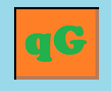

<!-- <button mat-raised-button color="primary" routerLink="">Menu</button> -->

<div class="question">
    

    <!-- <div class="question-title">Question </div> -->
    <!-- Information of this run -->
    <div class="question-div">
        <div class="question-info">
            <div *ngIf="categoryAll" class="question-title"> Selected Categories : All </div>
            <div *ngIf="!categoryAll" class="question-title"> Selected Categories :
                <p *ngFor="let category of categories" class="selected-category">{{category.name}}</p>
            </div>
            <div class="question-title"> Selected difficulty : {{difficultySelected}} </div>
            <div *ngIf="questionNB" class="question-counter">Question(s) answered : {{questionCounter}} / {{questionNB}}</div>
            <div *ngIf="!questionNB" class="question-counter">Question(s) answered : {{questionCounter}} </div>
            <div class="question-counter">Good answer(s) : {{counterGoodAnswer}}</div>
            <div class="question-counter">Percentage : {{percentage}}%</div>
            <div class="question-counter">Actual streak : {{actualRow.counter}} {{actualRow.type}}(s)</div>
        </div>
        <!-- Question -->
        <div class="question-part" *ngFor="let quest of question "><!-- | async -->
            <div class="question-question">Category : {{quest.category}}</div>
            <div class="question-question">Difficulty : {{quest.difficulty}}</div>
            <div class="question-question">{{quest.question}}</div>
            <!-- ANSWERS -->
            <div class="question-answers">
                <button *ngIf="index0" disabled="{{answered}}" class="question-answer" mat-raised-button
                    [ngClass]="{'blue' : !answered, 'green': answered}" (click)="onAnswer(true, quest)">
                    {{quest.correctAnswer}}
                </button>
                <button class="question-answer" disabled="{{answered}}" mat-raised-button
                    [ngClass]="{'blue' : !answered, 'red': answered && !isCorrect}" (click)="onAnswer(false, quest)">
                    {{quest.incorrectAnswers[0]}}
                </button>
                <button *ngIf="index1" class="question-answer" disabled="{{answered}}" mat-raised-button
                    (click)="onAnswer(true, quest)" [ngClass]="{'blue' : !answered, 'green': answered}">
                    {{quest.correctAnswer}}
                </button>
                <button class="question-answer" disabled="{{answered}}" mat-raised-button
                    (click)="onAnswer(false, quest)" [ngClass]="{'blue' : !answered, 'red': answered && !isCorrect}">
                    {{quest.incorrectAnswers[1]}}
                </button>
                <button *ngIf="index2" disabled="{{answered}}" class="question-answer" mat-raised-button
                    [ngClass]="{'blue' : !answered, 'green': answered }" (click)="onAnswer(true, quest)">
                    {{quest.correctAnswer}}
                </button>
                <button class="question-answer" mat-raised-button (click)="onAnswer(false, quest)"
                    [ngClass]="{'blue' : !answered, 'red': answered && !isCorrect}" disabled="{{answered}}">
                    {{quest.incorrectAnswers[2]}}
                </button>
                <button *ngIf="index3" class="question-answer" mat-raised-button
                    [ngClass]="{'blue' : !answered, 'green': answered}" (click)="onAnswer(true, quest)"
                    disabled="{{answered}}">
                    {{quest.correctAnswer}}
                </button>
            </div>
            <div class="question-question">{{result}}</div>
            <button *ngIf="answered && !isOver" class="question-answer" mat-raised-button (click)="nextQuestion()">
                Next Question
            </button>
            <div *ngIf="answered && isOver">
                <button  class="question-answer" mat-raised-button routerLink="">
                    Menu Return
                </button>
                <button  class="question-answer" mat-raised-button (click)="nextSerie()">
                    New Questions
                </button>
            </div>
            <div>{{loading}}</div>  
        </div>
            
    </div>

</div>